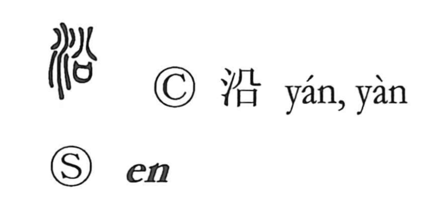

沿

Uncategorized
Kun: sou, soeru, soi | On: en
to go along ・ to follow ・ be in accordance with ・ rim ・ edge
Explanation
A phono-semantic graph: the water element indicates the domain of streams and coasts, while the right-hand phonetic marks the On reading en and goes back to a sacred image. There, the divine pneuma appears above a ritual receptacle for petitions (sai), with the shape 八 showing the spirit’s descent. In the related graph 兌, that spirit lightly comes down upon a shaman (祝) bearing the covenant vessel, bringing joy to the heart, and from this arises the sense of being in accord with the divine will. Transferred to water, the character comes to mean to go with, follow, or be in accordance with a course, and by extension the rim or edge—hence uses such as along the coast (沿海).